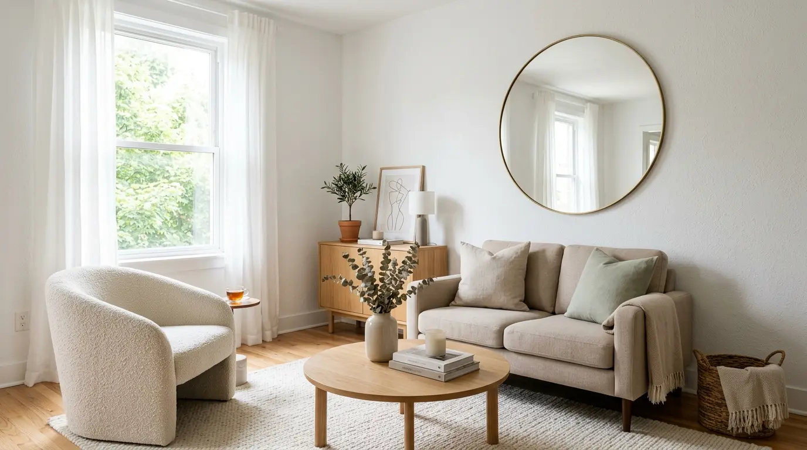
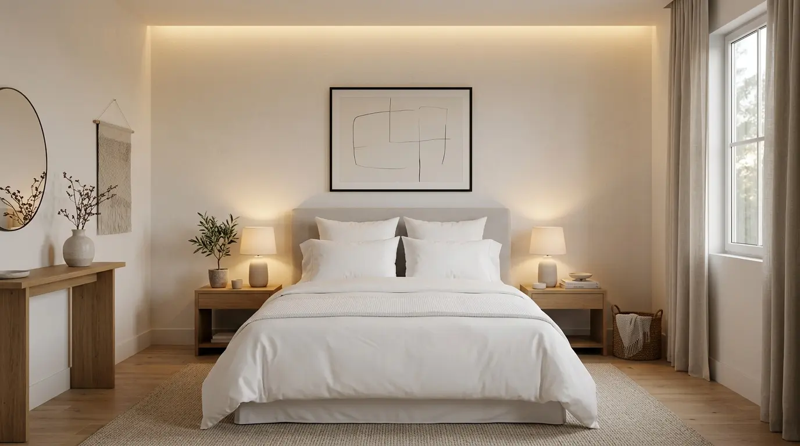
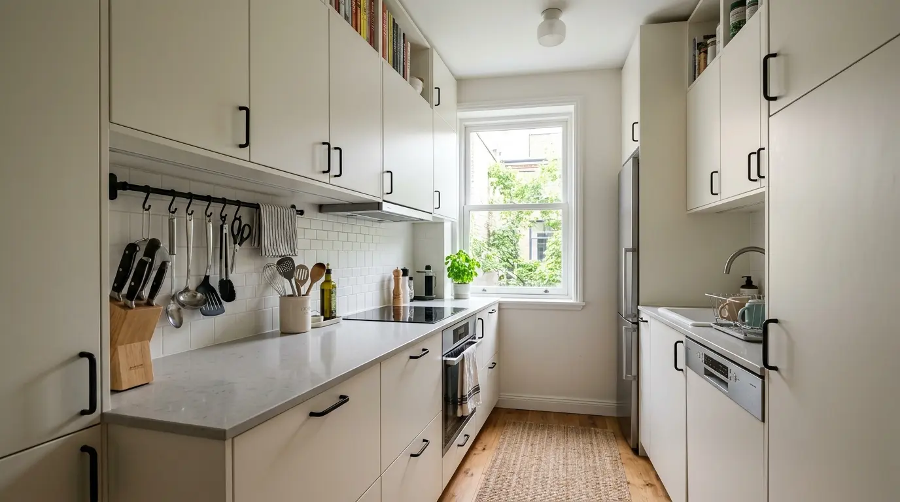
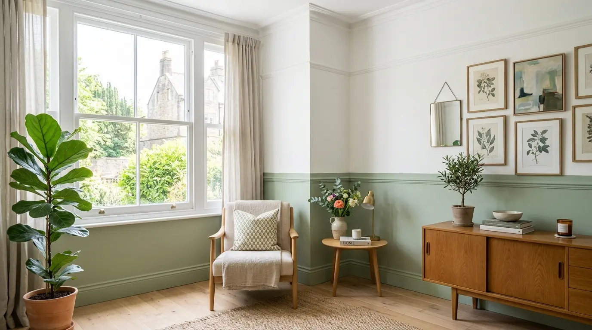
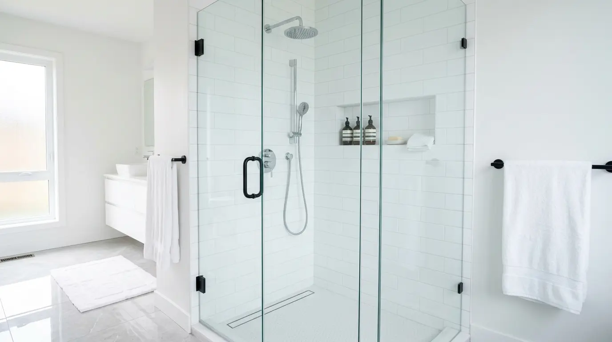
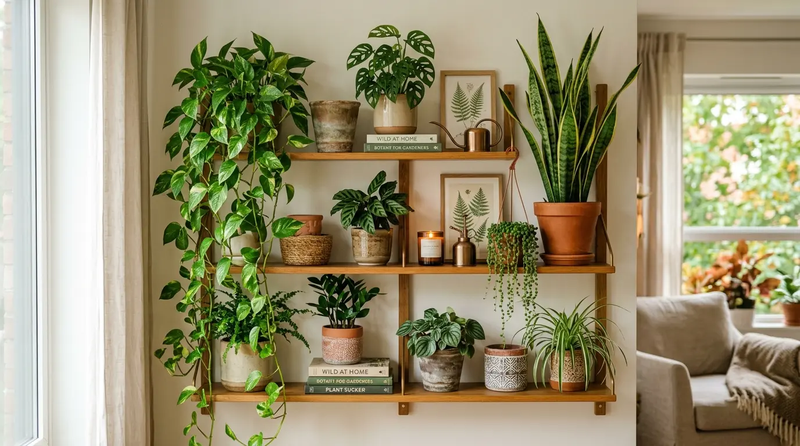

Decoração de sala pequena: 7 ideias para ampliar o espaço
Layout, proporção, cores e iluminação para melhorar a sala sem promessas irreais.
São 30 guias organizados por tema para ajudar você a encontrar respostas práticas, comparar opções e cuidar da casa com mais segurança.

Layout, proporção, cores e iluminação para melhorar a sala sem promessas irreais.

Um roteiro de layout, iluminação, roupa de cama e organização.

Medidas, fluxo, armários, eletros e pontos técnicos antes da marcenaria.

Entenda luminosidade, contraste e testes de cor no ambiente real.

Circulação, espelho, iluminação e armazenamento em poucos metros.

Funções, medidas, paleta e mudanças em camadas antes das compras.

Organização, luz e detalhes compatíveis antes de pensar em reforma.

Planeje luz para leitura, televisão, conversa e circulação.
Triagem, medidas e uma rotina que reduz o retorno da bagunça.


Separe uso diário e estoque sem prejudicar ventilação e limpeza.

Um método de sete dias com categorias, limites e rotinas curtas.

Categorias visíveis, rotação dos alimentos e estoque sem desperdício.

Etiqueta, teste discreto, pouca umidade e limites da limpeza doméstica.
Produtos compatíveis com azulejo, vidro, metais, pedras e rejunte.

Aspiração, ventilação, secagem completa e situações para pedir ajuda.

Limpeza compatível com vidro, ferragens, película e silicone.

Identifique os materiais, teste o produto e reconheça sinais de deterioração.

Cinco espécies e cuidados com rega, identificação e segurança.

Escolha a espécie de acordo com luz, ventilação e rotina.


Pisos, obstáculos, navegação, peças e privacidade antes da compra.

Capacidade, etiqueta, instalação e custo sem promessas universais.


Compare modelos reais pelo PBE, capacidade e custo total.

Defina um objetivo, cuide da rede e teste um ambiente por vez.